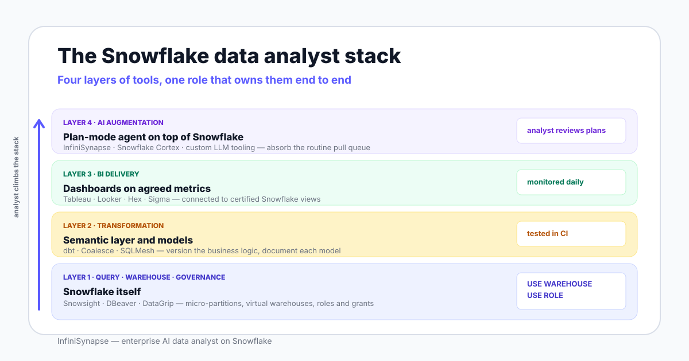

The role is not "SQL writer who happens to use Snowflake." Snowflake's separation of storage from compute, its micro-partition file layout, and its role-based access model shape day-to-day decisions in ways a Postgres or BigQuery analyst would not recognize.
If your team uses Snowflake, your analyst job description includes warehouse cost awareness, role context discipline, and query profile literacy. These are the habits that distinguish a Snowflake analyst from a generic SQL analyst.

Walk into a Snowflake team and you will find an analyst with five live responsibilities. None of them are "write SQL." All of them are downstream of writing SQL.
Snowflake bills by virtual warehouse second. The analyst picks the warehouse size for the workload, watches auto-suspend, and reads the Snowflake query history for runaway queries on the team's account.
This is a Snowflake-specific habit. Move the same analyst to BigQuery and the cost lever switches to bytes scanned and slot allocation, not warehouse seconds.
Snowflake uses role-based access control, and the role context is inherited from the active session. A junior analyst's first incident is usually a query that ran under ACCOUNTADMIN by mistake. The senior analyst's job is to make that incident hard to repeat.
The analyst authors dbt models that encode metric definitions — what counts as an active account, how MRR rolls up, which timestamp wins in event reconciliation. The dbt model is the single place where the team agrees what each number means.
Tableau, Looker, Hex, and Sigma sit on top of certified Snowflake views. The analyst owns the contract between the view and the dashboard: which fields are stable, which are deprecated, what changed since the last sprint.
This responsibility is new in 2026. When an AI agent writes SQL on your Snowflake account, the analyst reads its plan before execution — join keys, time windows, warehouse selection, role context. The skill is closer to code review than to writing queries yourself.
To make the role concrete, here is a realistic Tuesday for a mid-level Snowflake analyst at a 200-person SaaS company.
Slack ping from RevOps: "Why did EMEA expansion ARR drop last month?" You open Snowsight, switch to the ANALYST_ROLE, set USE WAREHOUSE ANALYST_WH, and run a few exploratory queries against dim_arr.
You spot a billing-cycle artifact — three EMEA accounts renewed on a 90-day cycle that landed in May not April. You answer in the thread with the query, the source dbt model, and a one-line caveat.
A finance review last Friday flagged a definition mismatch on net retention. You open the fct_net_retention dbt model, find the cohort window is off by a day at the month boundary, push a fix on a branch, and add a test that catches future drift.
The CI run takes 12 minutes against a smaller warehouse. While it runs, you sip coffee and read a runaway query alert from Snowflake's resource monitor.
The marketing dashboard's first paint creeps from 4 seconds to 18 seconds over a week. You pull the query into Snowsight, open the query profile, and find the join order changed after a recent dimension reload. You add a clustering key on the campaign date column. The first paint drops back to 5 seconds. You note the change in the runbook.
A product manager asks why the activation rate on the dashboard does not match the one in the all-hands deck. You walk through the two definitions — the dashboard uses a 7-day window, the deck uses 14 — and propose deprecating one of them.
This is where the role is most underrated. Half your value as a Snowflake analyst comes from making the right disagreement visible.
A teammate ran an agent against your Snowflake account to draft a churn investigation. The plan suggests joining fct_subscriptions with dim_account on email. You catch that the team's canonical key is account_id, not email, comment on the plan, and the agent re-plans.
Five minutes of plan review saved you an hour of explaining a wrong number to leadership.
The honest version of the stack has four layers. Pick one tool per layer that fits your team, not the trendiest brand.
| Layer | Tools | What it solves | Tradeoff |
|---|---|---|---|
| Query editor | Snowsight, DBeaver, DataGrip, VS Code with SQL extensions | Where you actually write and run SQL against Snowflake | Snowsight is free and Snowflake-native; third-party editors give better diffs and version control hooks |
| Transformation | dbt, Coalesce, SQLMesh | Versioned business logic — metric definitions, dimension tables | dbt is the default; Coalesce adds visual model authorship; SQLMesh emphasizes virtual environments |
| BI delivery | Tableau, Looker, Hex, Sigma | Daily dashboards on agreed metrics | Tableau is the visualization workhorse; Looker enforces the semantic layer harder; Hex blurs notebook and dashboard |
| AI augmentation | InfiniSynapse, Snowflake Cortex, custom LLM tooling | Absorbs the routine ad-hoc pull queue and supports investigations | Cortex is tightly coupled to Snowflake; InfiniSynapse adds cross-source joins beyond Snowflake; custom tooling demands engineering capacity |
An analyst whose entire stack is Snowsight and Tableau is missing the transformation layer. An analyst with no AI augmentation layer in 2026 is still functional, but they will see one show up in their JD within twelve months.
Generic SQL is table stakes. Hiring managers running a Snowflake interview screen for the habits below. The skill names below match the question patterns you will hear in a 2026 loop.
| Skill | What it looks like in practice | How interviewers probe |
|---|---|---|
| SQL proficiency | Window functions, CTEs, semi-structured access with VARIANT and ARRAY | "Flatten this nested event payload and compute a 7-day rolling active count." |
| dbt model authorship | Reading and editing existing models, writing tests, using ref and source correctly | "Walk me through the last dbt model you wrote or fixed." |
| Micro-partition awareness | Understanding how Snowflake stores data and why a clustering key sometimes matters | "Why did this query slow down after we backfilled a year of history?" |
| Role and grant hygiene | Knowing your active role, switching with USE ROLE, never running ad-hoc as ACCOUNTADMIN | "Show me how you check your role context before a destructive query." |
| Query profile reading | Interpreting the Snowflake query profile to find spill-to-disk and bad join orders | "Open this profile and tell me what went wrong." |
| Warehouse cost monitoring | Watching warehouse credit usage, picking the right size, tuning auto-suspend | "How do you decide whether to size up or split a workload across warehouses?" |
| Stakeholder framing | Turning ambiguous business questions into precise, answerable queries | "Tell me about a time you pushed back on a question and reshaped it." |
| AI workflow oversight | Reading an agent's plan, catching wrong joins, deciding when to override | "What would you change in this AI-generated SQL before running it on production?" |
You cannot honestly write a Snowflake analyst guide in 2026 without addressing the AI question head on. Here is the unvarnished version.
The pull queue on a typical Snowflake team is dominated by ad-hoc questions that have an answer on the warehouse but no dashboard yet. Routine pulls are what burn through analyst hours. They are also the category where AI agents now perform well — not because the SQL is hard, but because most ad-hoc requests need a definition lookup, two tables, a window, and a chart.
An agent like the one described in our AI database query pillar handles that shape of work under analyst review. The agent retrieves your dbt model documentation, drafts a plan, runs SQL against your Snowflake warehouse with a scoped role, and surfaces the result with an evidence trail. The analyst reviews the plan, not the SQL.
AI does not replace judgment. It absorbs the routine. The US Bureau of Labor Statistics still projects qualitative growth for data scientist and analyst roles. A credible read of 2026 agent capability is task automation, not role substitution — and even that comes with new oversight work for the analyst.
The shift looks like this. Less time on first-draft SQL for routine questions. More time on metric definitions, plan review, and stakeholder framing. The Anthropic agent guidance describes this pattern as a system that directs its own processes under human review, which is exactly the model a Snowflake analyst now applies to their own warehouse.
For the AI-augmented workflow on Snowflake specifically — what the analyst's day actually looks like with an agent in the loop — read the sibling guide on data analyst Snowflake with AI.
A common 2026 question for engineering leaders: do I hire another Snowflake analyst or buy an AI agent on top of the analyst I already have? The honest answer is that they are not substitutes.
If both columns describe you, hire the analyst first. AI augmentation amplifies a well-defined role. It does not invent one.
The honest comparison is below. Numbers are illustrative ranges, not quotes.
| Path | Up-front cost | Time to first value | Where it breaks |
|---|---|---|---|
| Hire one Snowflake analyst | Salary + benefits + ramp | 2-3 months to productive | Single point of failure; one person cannot scale to every ad-hoc pull |
| Add AI augmentation on existing analyst | Tool subscription + setup time | 2-4 weeks if definitions exist | Definitions and roles must already be clean; bad inputs in, bad answers out |
| Both — hire and tool up | Salary plus tool | 3-4 months to compounded value | Coordination cost if the analyst is not given time to own the agent's knowledge base |
| Outsource to an agency | Per-project fees | Days, but per project | No accumulation of internal knowledge; every quarter starts over |
The honest version: salary data for the Snowflake analyst role specifically is fragmented across job-board scrapers, vendor surveys, and recruiter LinkedIn posts. We avoid citing any single source as authoritative here.
What the US Bureau of Labor Statistics says directionally about the broader data scientist and data analyst families is qualitative growth — much faster than average, driven by demand across industries. That is the only number worth quoting on a page like this, because anything else risks looking precise without being accurate.
For role-specific compensation, your three honest sources are recent offers your network has seen, the salary band your own recruiters use, and aggregated reports from major recruiting firms in your region. Cross-check before quoting any single number to a candidate.
A Snowflake-fluent analyst is the human who pairs with the agent. Without the analyst, no one owns definitions, no one reviews plans, no one explains the number to the CFO. The agent generates faster — the analyst makes the answer trustworthy.
Connect a Snowflake account read-only, ask one real business question, and watch the plan, queries, and evidence trail before anything runs. The point is not to replace the analyst — it is to give the analyst a faster ad-hoc pull queue. Pair this with the sibling guide on the AI-augmented Snowflake workflow.
Try InfiniSynapse onlineLast updated: 2026-06-15 · Next scheduled review: 2026-09-15
The role definition, day-in-the-life walkthrough, and skill matrix on this page are synthesized from Snowflake official documentation, dbt documentation, the BLS data scientists outlook, public benchmark literature (BIRD, Spider), governance frameworks (NIST AI RMF, EU AI Act, ISO/IEC 42001), and the InfiniSynapse research team's hands-on work alongside Snowflake analyst teams.
Conflict of interest: InfiniSynapse publishes this page and competes in the AI augmentation layer described in the stack section. To reduce bias, the page names alternative tools at every layer, lists explicit cases where hiring beats tooling up, and avoids citing any single salary number we could not independently verify.
Update cadence: Reviewed every 90 days for tool-name changes, Snowflake feature updates, dbt model patterns, and AI augmentation behavior on real warehouses.